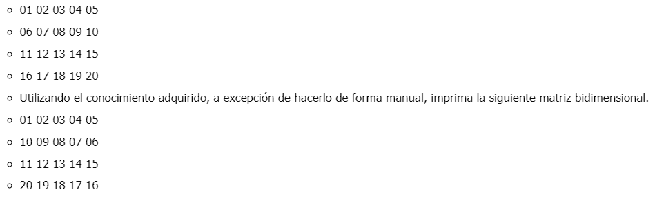

Crear un vector de tipo Entero con 5 posiciones, llenarlo con información solicitada al usuario. Después de recoger toda la información, se requiere imprimir el índice de cada posición en el arreglo con su valor de la siguiente manera:
package Main;
import java.util.Scanner;
public class MainEjercicioI {
public static void main(String[] args) {
Scanner input =new Scanner(System.in);
int vector[];
vector = new int[5];
System.out.println("Por favor, esciba 5 números");
System.out.println();
for (int i = 0; i <=4; i++) {
System.out.println("Número "+(i+1));
int numero = input.nextInt();
vector[i]= numero;
}
for (int i = 0; i <=4; i++) {
System.out.println("[ "+ i + " ] = "+ vector[i] );
}
}
}
Crear un arreglo de números enteros de 20 posiciones, el cual, debe ser llenado con números aleatorios entre 1 y 100; después de haber llenado dicho arreglo, se debe volver a recorrer utilizando un ciclo diferente al que se usó para llenarse e imprimir los números pares e impares. Ejemplo
package Main;
import java.util.Random;
import java.util.Scanner;
public class MainEjercicioII {
public static void main(String[] args) {
Scanner input =new Scanner(System.in);
Random numero = new Random();
int arreglo[];
arreglo = new int[20];
System.out.println(" ARREGLO");
int i = 0;
while (i<=19) {
int n = numero.nextInt(100);
arreglo[i] = n;
System.out.print(n+ " - ");
i= i+1;
}
System.out.println();
System.out.println(" Números Pares");
for (int j = 0; j <= 19; j++) {
if (arreglo[j]%2==0){
System.out.print(arreglo[j]+" - ");
}
}
System.out.println();
System.out.println(" Números Impares");
for (int j = 0; j <= 19; j++) {
if ((arreglo[j]+1)%2 == 0){
System.out.print(arreglo[j]+" - ");
}
}
}
}
Imprimir los números primos del 1 al 1000, el resultado debe ser buscado de forma matemática.
package Main;
public class MainEjercicioIII {
public static void main(String[] args) {
System.out.println(" Números primos del 1 al 1000");
System.out.println();
for (int i = 1; i <=1000; i++) {
int contador=0;
for (int j = 1; j <=i; j++) {
if ((i % j)==0){
contador = contador+1;
}
}
if(contador<=2){
System.out.print(i + " ");
}
}
}
}
Dada la siguiente matriz bidimensional, el cual debe de quemar en el código

package Main;
public class MainEjercicioIV {
public static void main(String[] args) {
int matriz[][];
matriz = new int[4][5];
matriz[0][0]= 01;
matriz[0][1]= 02;
matriz[0][2]= 03;
matriz[0][3]= 04;
matriz[0][4]= 05;
matriz[1][0]= 06;
matriz[1][1]= 07;
matriz[1][2]= 8;
matriz[1][3]= 9;
matriz[1][4]= 10;
matriz[2][0]= 11;
matriz[2][1]= 12;
matriz[2][2]= 13;
matriz[2][3]= 14;
matriz[2][4]= 15;
matriz[3][0]= 16;
matriz[3][1]= 17;
matriz[3][2]= 18;
matriz[3][3]= 19;
matriz[3][4]= 20;
System.out.println(" Matriz Original");
for (int i = 0; i <= 3; i++) {
for (int j = 0; j <= 4; j++) {
System.out.print( matriz[i][j]+ " ");
}
System.out.println();
}
System.out.println();
System.out.println(" Matriz Convertida");
for (int i = 0; i <= 3; i++) {
if ((i==1)||(i==3)){
int modificador = 4;
for (int j = 0; j <=4; j++) {
matriz[i][j] = matriz[i][j] + modificador;
modificador = modificador-2;
}
}
}
for (int i = 0; i <=3; i++) {
for (int j = 0; j <=4; j++) {
System.out.print(matriz[i][j]+ " ");
}
System.out.println();
}
}
}
Se debe de imprimir el siguiente cuadro. El usuario deberá insertar la fila y columna de la cual desea ver el resultado, el resultado de cada celda debe estar previamente calculado en una matriz bidimensional la cual cada resultado obedecerá a la fila y columna insertada por el usuario.
Clase EjercicioV, donde se capturan los datos y se declara el metodo
package Entidades;
import java.util.Scanner;
public class EjercicioV {
private int numFila;
private int numColumna;
public int getNumFila() {
return numFila;
}
public void setNumFila(int numFila) {
this.numFila = numFila;
}
public int getNumColumna() {
return numColumna;
}
public void setNumColumna(int numColumna) {
this.numColumna = numColumna;
}
Scanner input= new Scanner(System.in);
public void multiplicacion(){
System.out.println();
System.out.println("Para conocer el resultado por favor digite el numero del multiplicando ( Primer factor) y despues el multiplicador (Segundo factor) ");
System.out.println("Multiplicando: ");
setNumColumna(input.nextInt());
System.out.println("Multiplicador: ");
setNumFila(input.nextInt());
for (int i = 1; i <= 10; i++) {
for (int j = 1; j <= 10; j++) {
int producto = j*i;
if((i==getNumFila()) && (j==getNumColumna())){
System.out.println("El resultado de la multiplicación "+ getNumColumna()+ " x "+ getNumFila()+ " = "+ producto);
}
}
}
}
}
Clase main, donde se ejecuta el metodo
package Main;
import Entidades.EjercicioV;
public class MainEjercicioV {
public static void main(String[] args) {
EjercicioV multiplicar = new EjercicioV();
System.out.println(" Tabla de muliplicar");
for (int i = 1; i <= 10; i++) {
for (int j = 1; j <= 10; j++) {
System.out.print(j + " x "+ i +" ");
}
System.out.println();
}
multiplicar.multiplicacion();
}
}
El desarollo de los anteriores ejercicios se ecuentra en el repositorio de GitHub: talleresSofka-I-II-III-IV, en la rama: Talleres, carpeta: Taller4